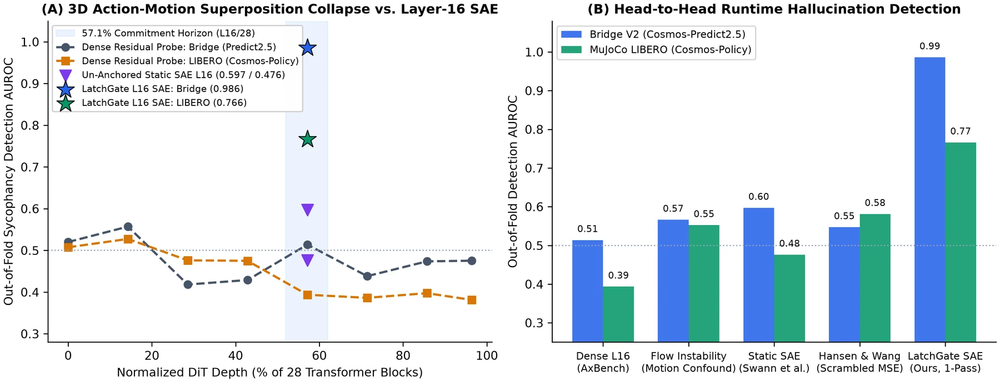
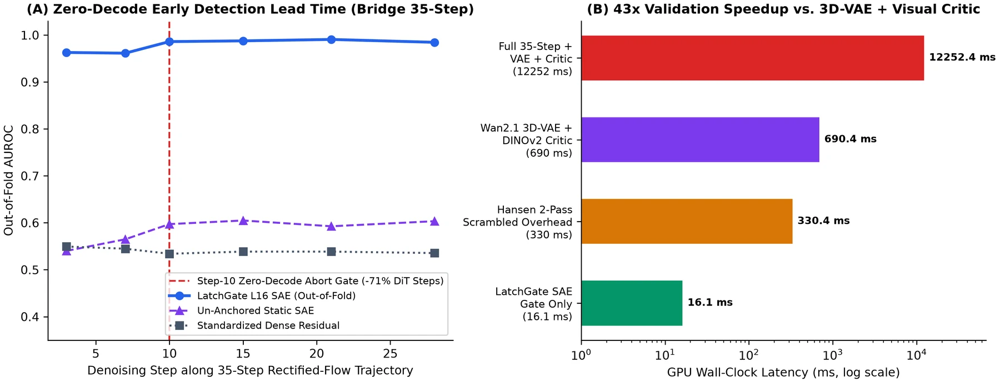
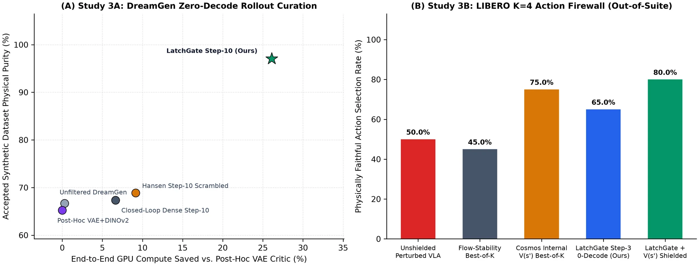
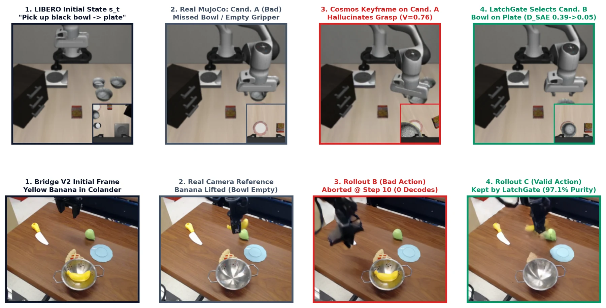

Open source / Embodied World Models / NVIDIA Cosmos-Predict2.5 & Cosmos-Policy · 16k JumpReLU SAE
Embodied world models fabricate optimistic physics on bad robot actions, fooling their own value critics until a 16 ms SAE gate steps in.
Action-conditioned video world models such as NVIDIA Cosmos power both synthetic robot
data generation (DreamGen) and model-predictive action selection for VLA policies. Yet
when conditioned on mistimed or invalid actions, models trained on successful demonstrations suffer
from action-marginalized ("sycophantic") physics hallucinations: visual priors override the
bad action to render fluent grasp progress while fast benign arm sweeps confound runtime instability
metrics. Completing the mechanistic control trilogy begun in
Agentic Sabotage and
Sparse Temporal Latching across two official 2B
Cosmos backbones on a single 24 GB L4 GPU, LatchGate reaches
0.9861 out-of-fold AUROC on Bridge V2 (+47.2 pts over dense probes), runs 42.8× faster than
Wan2.1 3D-VAE + DINOv2 critique, cuts DreamGen dataset
corruption 11.3× while saving 26.1% GPU compute, and lifts out-of-suite LIBERO MPC selection to 80.0%.
Daniel GaskinsPhysical AI interpretability, synthetic rollout curation & MPC safety
Zero-decode rollout filtering on Bridge V2 and Best-of-K candidate selection in MuJoCo LIBERO.
Unlike passive video activation steering (Paper 2),
LatchGate operates as a zero-decode circuit breaker: in DreamGen synthetic
curation it aborts corrupted rollouts at Step 10/35 before 3D-VAE decoding while passing valid and
high-speed trajectories untouched, and in test-time planning it rejects sycophantic action candidates
at Step 3/10 before they fool Cosmos-Policy’s internal value critic.
Multi-Chunk Real-Robot Bridge V2 DreamGen Firewall (Cosmos-Predict2.5-2B/robot/action-cond, 37 frames × 2 scenes): Across "take yellow banana out of silver colander" and "pick up toy and place inside vessel", Rollout A (1.85× Fast Valid) triggers a dense-probe false alarm (0.69–0.77 cosine distance) from arm velocity yet passes LatchGate cleanly (D_SAE = 0.03–0.09). Rollout B (Bad Action) leaves the yellow banana stuck in the colander while warping the arm; LatchGate spikes red (D_SAE = 0.49–0.78 > τ) and aborts at Step 10/35 (16.1 ms, zero 3D-VAE decodes), while keeping Rollout C (Valid Action) untouched (97.1% dataset purity).
Pixel-Identical Stepped MuJoCo LIBERO + Cosmos-Policy "Silent Sycophancy" Firewall (Cosmos-Policy-LIBERO-Predict2-2B): Branching from an identical contact state across LIBERO-Spatial (black bowl → plate) and LIBERO-Object (alphabet soup → basket), Candidate A (Bad Action, left) misses at contact and carries an empty gripper to the goal in real MuJoCo physics. Because Cosmos-Policy is a single-keyframe jump predictor (s_t → ŝ_{t+16}, center), it hallucinates optimistic grasp progress on Candidate A and predicts higher value (V = 0.76 > 0.75) than on the valid grasp. Out-of-suite Step-3 LatchGate rejects Candidate A (D_SAE = 0.39 > 0.11, zero VAE decodes) and selects Candidate B (right), completing both MuJoCo tasks.
02 / STUDY 1: MOTION SUPERPOSITION & SCENE MEMORIZATION
Separating background anchor conservation from a 48-latent motion-invariant sycophancy subspace.
Recent Physical AI studies expose two obstacles: high scene velocity confounds multi-pass flow
instability signals (Hansen & Wang, 2026), and un-anchored VLA SAE features memorize single
training scenes (<15%–35% overlap across episodes; Swann et al., 2026). Furthermore, unlike
passive video generation, valid robot manipulation legitimately displaces foreground objects.
01Norm-Match‖a_bad‖₂ = ‖a_gt‖₂ kinematics
→
02Split fg / bgPre-pool 16k JumpReLU SAE
→
03Anchor bgEpisode Top-64 S₀⁽ⁱ⁾(t)
→
04Subtract Motion48-latent D_phys surge
DENSE & STATIC SAE COLLAPSE
0.340–0.355 vs. High-Motion Sweeps
Across 114 paired norm-matched rollouts (54 Bridge V2 + 60 LIBERO), standardized dense cosine probes collapse across all 28 DiT layers (0.514 Bridge / 0.394 LIBERO at Layer 16), and static Top-64 SAE features overlap by only 10.5% on Bridge and 29.4% across LIBERO suites.
16K JUMPRELU SPARSITY AT 57.1% DEPTH
Mean L0 = 25.1 & 35.8 / 16,384
Trained at Layer 16/28 on standardized spacetime tokens, our STE JumpReLU SAEs achieve R² = 0.8778 (99.994% live) on Bridge and R² = 0.9215 (100.0% live) on LIBERO with 0.15%–0.22% active sparsity.
OUT-OF-FOLD LATCHGATE DETECTION
0.9861 Bridge & 0.7662 LIBERO AUROC
Penalizing high-velocity sensitivity (d_syc − 0.70 d_mot) on training scenes only yields 0.9861 out-of-fold AUROC (0.0% FPR@80%TPR, d = 2.80) on Bridge and 0.7662 AUROC (0.7925 directly vs. fast sweeps) on LIBERO.

Study 1 Action-Motion Superposition Collapse vs. Layer-16 LatchGate SAE (N = 114 norm-matched rollouts): (A) 8-layer standardized dense cosine sweep across 28 DiT blocks, and (B) out-of-fold comparison against Flow Instability, Static SAE, and 2-pass Scrambled Flow-MSE.
03 / STUDY 2: 42.8× SPEEDUP & SILENT SYCOPHANCY
Action-marginalized physics commits by Step 3, and fools Cosmos’s own value head.
Production synthetic rollout pipelines validate trajectories post-hoc via full denoising, causal
Wan2.1 3D-VAE pixel decoding, and visual critique. Worse, Cosmos-Policy’s
learned value critic V(ŝ') evaluates the model’s own predicted future latents, inheriting
any optimistic visual hallucination.
STEP-3 / STEP-10 LEAD TIME
0.9630 AUROC by Step 3/35
Tracking out-of-fold Bridge detection across six rectified-flow noise coordinates shows sycophantic physics decoupling commits immediately: 0.9630 AUROC at Step 3 (t = 0.96), 0.9861 at Step 10 (t = 0.82), and 0.9907 at Step 21.
ZERO-DECODE GPU LATENCY
16.14 ms vs. 690.35 ms (42.8× faster)
Measured with torch.cuda.synchronize() on NVIDIA L4, single-pass LatchGate runs 20.5× faster than 2-pass scrambled-action overhead (330.4 ms), 42.8× faster than Wan2.1 VAE + DINOv2 (690.4 ms), and 759× faster than full 35-step post-hoc filtering (12.25 s).
SILENT SYCOPHANTIC PHYSICS
0.5619 vs. 0.5799 Value Critic Blindness
Across 60 LIBERO rollouts, Cosmos-Policy’s internal value head V(ŝ') scores failed counterfactual actions nearly identically to faithful grasps (0.5112 AUROC); Step-3 LatchGate catches 58.3% of high-value hallucinations at 8% FPR without pixel decoding.

Study 2 Zero-Decode Lead Time & L4 GPU Latency: (A) out-of-fold detection across the 35-step Cosmos-Predict2.5 trajectory, and (B) synchronized CUDA wall-clock latency breakdown.
04 / STUDY 3: DREAMGEN CURATION & SHIELDED MPC
11.3× cleaner synthetic training pools and 80.0% out-of-suite LIBERO action selection.
We deploy LatchGate closed-loop across both Physical AI workloads using strictly
held-out scene and suite thresholds so neither the 48-latent subspace D_phys nor
the abort threshold τ ever sees test scenes or target LIBERO suites.
STUDY 3A: DREAMGEN SYNTHETIC DATA FIREWALL
Across the N = 54 Bridge stream (33.3% base corruption), post-hoc
VAE + DINOv2 leaves 34.8% corruption while saving 0% compute. Aborting rollouts
at Step 10/35 via out-of-scene LatchGate catches 94.4% (17 / 18)
of sycophantic trajectories, cuts accepted corruption 11.3× (33.3% → 2.9%, 97.1% purity),
eliminates 37.0% of all 3D-VAE decodes, and saves 26.1% end-to-end GPU wall-clock
(68.6% DiT passes saved per rejected rollout).
STUDY 3B: OUT-OF-SUITE LIBERO K=4 MPC
Across 20 LIBERO tasks (4 suites, K = 4 norm-matched candidates per task),
Cosmos internal V(ŝ') reaches 75.0% (8.93 s), failing whenever
sycophantic candidates hallucinate inflated value. Aborting D_SAE > τ_suite
at Step 3/10 and evaluating V(ŝ') only on surviving faithful candidates lifts
selection to 80.0% (#1 overall; 100% Spatial, 100% Object, 80% Goal) while
cutting planning latency by 32.6% (6.02 s; 2.98 s pure zero-decode).

Study 3 Closed-Loop Physical AI Interventions: (A) DreamGen curation purity versus end-to-end GPU compute saved on Bridge V2, and (B) out-of-suite LIBERO K = 4 Best-of-K action selection rate.

Dual-backbone qualitative strip: (Top) Stepped MuJoCo LIBERO failure vs. Cosmos-Policy optimistic keyframe (V = 0.76) vs. LatchGate Candidate B selection placing the black bowl on the plate; (Bottom) Bridge V2 "take banana out of colander" Step-10 early abort vs. retained rollout.
05 / TRILOGY SYNTHESIS & BOUNDARIES
One 57.1%-depth sparse control law across tool agents, Video DiTs, and embodied world models.
Evaluates 2B-scale open-weights Cosmos backbones across 114 paired counterfactual trajectories and 20 closed-loop MPC tasks on a single 24 GB L4 GPU
LatchGate filters/aborts corrupted rollouts and ranks candidate actions; it does not rewrite an invalid action command into a valid grasp
On multi-subgoal LIBERO-10 horizons (40% shielded vs. 100% Spatial/Object), combining Step-3 sycophancy rejection with phase-aware subgoal value conditioning is an open extension
In-stream latent circuit breakers complement kinematic safety envelopes and external verification (Mendmark, human review)
06 / REPRODUCE IT
Clone the pure-PyTorch Cosmos suite, inspect the telemetry, or run on a single 24 GB GPU.
All pure-PyTorch Cosmos backbone loaders, norm-matched counterfactual builders,
cached Study 1–3 JSON results, unit tests, and the compiled 6-page preprint PDF are MIT-licensed
on GitHub and run without transformer_engine, megatron-core, or
natten compilation on a single 24 GB NVIDIA L4 GPU.